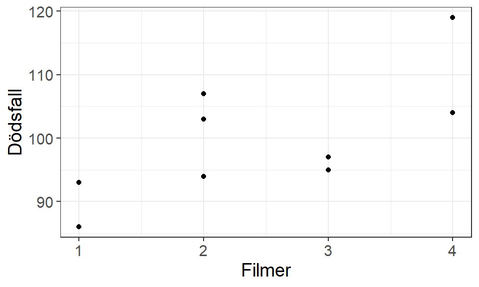

1 Introduktion till regression
Att undersöka samband mellan variabler är ett vanligt steg i att förstå relationer eller fenomen. Till exempel hur åldern på ett träd påverkar dess volym, hur olika doser av en medicin påverkar en individs blodtryck, eller hur en persons ålder och utbildningsnivå påverkar dens ingångslön.
Regressionsanalys omfattar metoder som anpassar matematiska modeller vilka på bästa sätt kan ge en förenklad bild av verkligheten. Generellt är modeller någon form av konstruktion som skapas för att öka förståelsen av någonting verkligt. Till exempel är en flygplansmodell inte ett riktigt flygplan men kan användas för att förstå hur ett flygplan är uppbyggd och hur den kan hantera luftströmmar och andra fenomen. Ett klassiskt exempel är tavlan “Ceci n’est pas une pipe” av René Magritte (Figur 1.1) som visar en representation (en modell) av en pipa, inte en fungerande pipa.
{kind=link}
1.1 Den linjära regressionsmodellen
Det finns många olika sorters modeller inom regressionsanalys, men i det allra enklaste fallet anpassas en linjär modell där variablernas samband antas enkelriktat och konstant. \[ Y = \beta_0 + \beta_1 \cdot X + E \tag{1.1}\]
där:
- \(Y\) är den beroende/respons- variabeln som antas påverkas av \(X\).
- \(X\) är den oberoende/förklarande variabeln som antas påverka \(Y\).
- \(\beta_0\) är modellens intercept där linjen skär y-axeln när \(X = 0\).
- \(\beta_1\) är lutningen som beskriver det enkelriktade samband mellan \(X\) och \(Y\). Mer specifikt beskriver parametern förändringen i \(Y\) när \(X\) ökar med en enhet.
- \(E\) är modellens felterm, avståndet mellan det observerade värdet på \(Y\) och modellens skattade värde \(\hat{Y}\).
Om flera förklarande variabler antas påverka responsvariabeln utökas den linjära modellen med flera \(\beta_j\), en för varje förklarande variabel \(X_j\). Senare kapitel kommer titta närmare på utökningar av denna linjära modell.
1.2 Modellens antaganden
Syftet med en modell är att ge en lämplig förenkling av verkligheten. En linjär regressionsmodell kan vara en lämplig förenkling av ett samband om följande antaganden uppfylls:
- att det för varje \(X\) finns en slumpvariabel \(Y\) med ett ändligt medelvärde och varians,
- observationerna är oberoende av varandra,
- medelvärdet, \(\mu_{Y|X}\), kan modelleras linjärt,
- variansen för \(Y\) är lika för alla värden av \(X\), \(\sigma^2_{Y|X} \equiv \sigma^2\),
- slumpvariabeln \(Y\) är normalfördelad för alla värden av \(X\).
Vi kan sammanfatta majoriteten av dessa antaganden med: \[ Y|X \overset{\mathrm{iid}}{\sim} N(\mu_{Y|X}, \sigma^2_{Y|X}) \] där \(\mathrm{iid}\) betyder “independent and identically distributed” motsvarande antagande 2.
Viktigt
Det finns inget antagande om att \(Y \sim N(\mu_Y, \sigma^2_Y)\)! Alla antaganden för en linjär regressionsmodell fokuserar på att vi med hjälp av \(X\) har en normalfördelad slumpvariabel \(Y\).
Om det tredje antagandet uppfylls kan vi modellera väntevärdet av \(Y|X\) med den linjära modellen: \[ E[Y|X] = \beta_0 + \beta_1 \cdot X \tag{1.2}\] så att: \[ Y|X \overset{\mathrm{iid}}{\sim} N(\beta_0 + \beta_1 \cdot X, \sigma^2_{Y|X}) \]
Till skillnad från Ekvation 1.1 saknar Ekvation 1.2 modellens felterm på grund av att vi nu modellerar endast medelvärdet av slumpvariabelns fördelning, \(\mu_{Y|X}\). Osäkerheten runtomkring medelvärdet är variansen av fördelningen.
När vi modellerar varje enskilda observation inkluderas \(E\) vilket innebär att vi kan flytta modellens antaganden från \(Y|X\) till \(E\). \[ E \overset{\mathrm{iid}}{\sim} N(0, \sigma^2) \tag{1.3}\]
Denna omskrivning ger oss en bra utgångspunkt att utvärdera lämpligheten av en anpassad modell.
Om en flygplansmodell ser endast till viss del ut som ett flygplan kommer modellen inte vara lämplig att använda för att förstå eller förenkla verkligheten. Detsamma gäller för regressionsmodeller; om modellen inte uppfyller dess antaganden riskerar slutsatser som dras inte stämma överens med verkligheten.
1.3 Studier och andra variabler
En regressionsmodell behöver nödvändigtvis inte beskriva ett “orsak-och-verkan” samband, eller som vi brukar benämna det, ett kausalt samband. Samband kan ibland uppstå utav ren slump där det inte finns någon logisk koppling mellan variablerna. Denna typ av samband benämns som korrelationssamband. Trots att korrelationssamband rent matematiskt beskriver en relation mellan den ena variabeln och den andra, är det i vissa fall inte lämpligt eller relevant att använda eller tolka modellen i verkligheten.

Figur 1.3 uppvisar ett exempel på korrelationssamband där de två variablerna inte har någon logisk koppling till varandra utan endast har observerats ha en positiv korrelation. Att beskriva detta samband skulle inte ge någon information om verkligheten så en viktig del av regressionsanalys är att bedöma lämpligheten och relevansen av utvalda variabler. Rent matematiskt kan inte heller en regressionsmodell urskilja mellan kausala eller korrelationssamband vilket innebär att vi som analytiker måste ta hänsyn till vilken sorts data och hur data har samlats in för att använda och tolka modellerna på rätt sätt.
Exemplet i figuren är insamlad som en observationsstudie där mätvärden (antal dödsfall och filmer) på enheterna (år) har observerats från olika registerdata. Vi har inte kunnat styra vilken relation dessa variabler har till varandra och studien i sig har inte tagit hänsyn till någon specifik orsak och verkan mellan de två. Vi kan därför endast dra slutsatser om korrelationssamband från en observationsstudie, vi kan säga att desto fler filmer Nicolas Cage medverkar i medför ett större antal dödsfall, vilket egentligen inte är relevant, men vi kan inte säga något om den kausala effekten.
För att kunna dra slutsatser om kausala samband behöver vi genomföra en experimentell studie där vi styr vilka mätvärden som enheter får eller har och responsvariablen antas vara en direkt effekt från de förklarande variablerna. Medicinska studier, till exempel studier om Covid-vaccinets effektivitet på att motverka en infektion, är typiska exempel på experimentella studier där en förklarande variabel (dos) ges till vissa grupper av enheter där andra påverkande effekter kontrolleras för att justera den förklarande variabelns verkliga påverkan.
1.3.1 Kontrollvariabler
I en observationsstudie kan vi ibland observera kontrollvariabler som kan justera den förklarande variabelns faktiska påverkan men det är främst i experimentella studier som dessa typer av variabler kan användas. Okända variabler kallas för confounding-effekter och antas påverka både den förklarande och responsvariabeln.
I följande två figurer visas den huvudsakliga förklarande variabeln och den valda responsvariabeln med ovaler. De kända (heldragen) och okända (streckade) kontrollvariablerna visas som rektanglar.
Eftersom sambandet mellan filmer och dödsfall förmodligen endast uppkommit av slumpen kan det finnas andra okända variabler som påverkar de båda.
Effekten av en medicin på blodtryck kan också påverkas av personens ålder och kön (Gu m.fl. 2008) vilka inkluderas i modellen för att isolera den förklarande variabelns effekt. I alla dessa exempel är det endast en effekt som är av intresse att undersöka, trots att modellen innehåller flera variabler och tillhörande lutningsparametrar.
”CDC - NCHS - National Center for Health Statistics — cdc.gov”. https://www.cdc.gov/nchs/.
”Create a model of a commercial airplane where some parts are taken from a car or a boat”. 2024. OpenAI. https://chat.openai.com/chat.
Gu, Qiuping, Vicki L. Burt, Ryne Paulose-Ram, och Charles F. Dillon. 2008. ”Gender Differences in Hypertension Treatment, Drug Utilization Patterns, and Blood Pressure Control Among US Adults With Hypertension: Data From the National Health and Nutrition Examination Survey 1999–2004”. American Journal of Hypertension 21 (7): 789–98. https://doi.org/10.1038/ajh.2008.185.
”Nicolas Cage | Actor, Producer, Director — imdb.com”. https://www.imdb.com/name/nm0000115/.